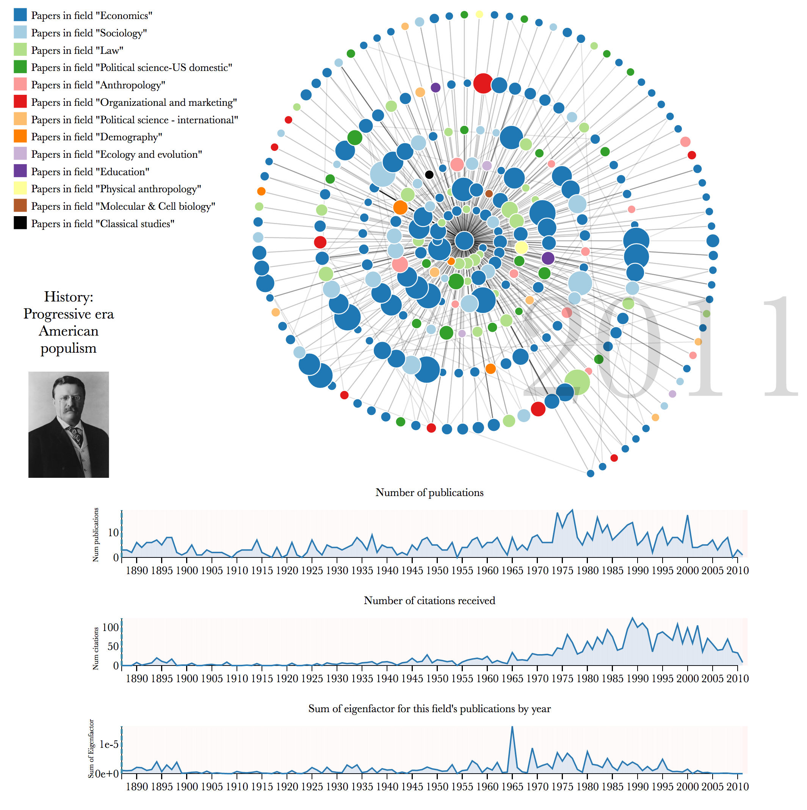

Citation graphs between scholarly papers can be used to learn about the structure and development of scholarship. We present a generalizable approach to visualizing scholarly influence over time, using a dynamic node-link diagram representing the citation patterns between groups of papers. We combine this approach with hierarchical clustering techniques that exploit the network structure to partition the graph into clusters representing fields and subfields. We use these methods to explore the influence that fields have had on other fields over time.
Examining the scholarly literature as a vast network of ideas connected by citations and footnotes can yield insights into the flow and evolution of ideas. Understanding the structure of this network can help us understand the progression of science and the development of human knowledge. We present novel methods using dynamic network visualizations and graph clustering techniques to show patterns around the influence that scholarly fields have on other fields over time.
The node-link diagram is a common paradigm for visually representing network data; however, these diagrams tend to be overwhelming and inscrutable to the average viewer, especially when representing rich dynamic data. Our approach is to use animation and a spiral placement of nodes around a fixed center to encode temporal features of the network, allowing for a more accessible display of rich information in a limited space.
We were motivated to explore visualization methods of scholarly influence through a collaboration with the Pew Scholars Program in the Biomedical Sciences, which provides early-career funding to prominent health researchers each year. The program wanted to reflect on its history using more than just standard metrics such as citation counts, h-indexes, and impact factors.
We approached our work with the Pew program as a case study in narrative visualization, developing our methods according to the Pew program's goal of reflecting on their history while seeing a broader opportunity to use visualization to convey scholarly impact. We drew on previous work in visualizing citation networks , narrative visualizations , and dynamic network visualizations to provide ways of exploring dimensions of scholarly influence over time in an accessible and compelling format. We designed the visualization in collaboration with the Pew program leadership, and evaluated the design using demonstrations and interviews with Pew Scholars. A demonstration of the author-level visualization using sample data can be found at http://scholar.eigenfactor.org/demo. We concluded from our evaluation that our design was an effective method of showing scholarly influence.
In our current work, we explore shifting the focus from author to academic field. We partition the overall citation graph into fields and subfields (see ) and focus on one specific subfield as the center node. Extending our efforts visualizing the influence that one scholar has had within and outside of her research area over time, we hope to explore the influence that an idea in science has had over the course of its lifetime.
Our database of scholarly publications includes 1.7 million full-text articles from the JSTOR archive and more than 8 million citations between those articles. The methods for naming the fields are described in . We used the citation network–with papers as nodes and citations as links–and clustered the citation graph using the hierarchical version of the map equation . We then hand-labeled 1,765 fields and subfields from the hierarchical partition. We labeled the fields by looking at the top 50 papers in each field.
Papers were ranked using the Article-Level Eigenfactor Score (ALEF). The details of the ranking method can be found at . It takes into account the time-directedness of article-level networks. The ALEF algorithm has performed well in static ranking challenges . We used the article rankings for both the labeling and for identifying the influence of papers that cite the fields of focus (see ).
Currently, the visualization samples 6 fields. We plan to expand to all 1,765 fields in the JSTOR dataset. Users will have the ability to move from field to field and from paper to paper. We plan also to cluster, label, and incorporate other paper archives, including SSRN, arXiv, etc.

shows a screenshot of the final state of the visualization; the full, animated, interactive visualization for a sample of fields can be viewed at http://scholar.eigenfactor.org/fields. We use the open-source JavaScript visualization library D3 , transforming the citation data into a directed egocentric network in which the center (ego) node represents all of the publications in a particular subfield and surrounding (alter) nodes represent individual papers from other fields that have cited work represented in the ego. (The code to generate the visualization will be made available in an open-source repository.) In the figure above, for example, the central subfield is "Progressive era American populism" which is part of the high-level field "History," and the alter nodes are papers in other subfields that have cited this field's papers. The graph diagram shows the ego node as a central circle, and the alter nodes as circles that surround the center in a spiral formation. The surrounding nodes appear one by one according to year of publication and send out links representing citations to the center and to other nodes that appear in the network. Papers that cite the central field multiple times send out multiple overlaid links to the center, so these links appear darker. A year counter shows the publication year of the papers currently appearing. As the nodes appear, the viewer can explore further by mousing over the nodes for more information. The viewer can also explore papers in the center field by mousing over the timeline charts below.
While the total set of the nodes represents any paper that has ever cited a paper authored by the central field, in order to reduce the complexity of the graph we choose a sample of these nodes to visualize, aiming to include influential papers (based on Eigenfactor), from a variety of high-level fields. Currently, the number of nodes is capped at 275, though we are experimenting with alternatives. More complete statistics for the full egocentric network are shown in integrated timeline charts below the graph.
We explore representing the idea of influence in several different ways, and so the network diagram features several different visual encodings of influence. The size of the nodes is scaled by the Eigenfactor metric of each paper, so that larger nodes are easily identified as more influential papers. The color of the nodes encodes the high-level field of the paper according to the paper's cluster assignment for the top-level partition (e.g. "Economics," "Sociology"). This allows a view of to what extent this subdiscipline has had impact that has spread to other disciplines. A field with a more monochrome network will have had most of its influence within one particular field, while a network with more color means more citations from papers in other fields.
We arrived at our design through an iterative design process with the overall goal of creating an accessible, narrative visualization of different dimensions of scholarly influence over time. The use of animation was an important design choice throughout the process, as animation naturally draws attention and can encourage perceptions of narrative. We chose the spiral for the spatial encoding as it allowed us to encode time of publication as radial distance from the center, reinforcing its temporal encoding with the animation. The spiral layout also allows us to include more nodes in a limited space without too much overlap and confusion, addressing the overwhelming "hairball" effect that often comes along with node-link network diagrams.
Visualizing the citation graph in this way with the focus on a particular subfield gives a gestalt view of the spread of influence the field has had over time. The work is in early stages, so we are still exploring what insights can come from examining different fields. Looking at the example in , we can see that "Progressive era American populism" is a well established field with a history of publication going back to the 1800s. As may be expected, it has had a wide range of influence across many academic disciplines, as can be seen by the extent of the colors in the network diagram.
We plan to use this work as a starting point to explore different ways of visualizing dynamic field-level influence using the citation network. We currently make use of the top and bottom levels of the cluster hierarchy, but we can explore ways to make use of the intermediate levels. We can also make use of other data, such as marking certain nodes as review articles, as these may have a different interpretation than primary research papers when thinking about influence. Another direction would be to switch the citation direction and, rather than looking at the influence that a field has had, visualize which papers and fields have influenced the field of interest.
We would like to thank the Pew Charitable Trusts and the Metaknowledge Network for funding and other support. We also thank JSTOR and Microsoft Academic Search for allowing us the use of their data.
Beck, F., Burch, M., Diehl, S., & Weiskopf, D. (2014). The state of the art in visualizing dynamic graphs. EuroVis STAR.
Bostock, M., Ogievetsky, V., & Heer, J. (2011). D3: Data-Driven Documents. IEEE Trans. Visualization & Comp. Graphics (Proc. InfoVis).
Cobo, M. j., López-Herrera, A. g., Herrera-Viedma, E., & Herrera, F. (2011). Science mapping software tools: Review, analysis, and cooperative study among tools. Journal of the American Society for Information Science and Technology, 62(7), 1382–1402. DOI: 10.1002/asi.21525
Rosvall, M., & Bergstrom, C. T. (2011). Multilevel Compression of Random Walks on Networks Reveals Hierarchical Organization in Large Integrated Systems. PLoS ONE, 6(4), e18209. DOI: 10.1371/journal.pone.0018209
Segel, E., & Heer, J. (2010). Narrative Visualization: Telling Stories with Data. IEEE Transactions on Visualization and Computer Graphics, 16(6), 1139–1148. DOI: 10.1109/TVCG.2010.179
Wesley-Smith, I., Bergstrom, C. T., & West, J. D. (in press). Static Ranking of Scholarly Papers using Article-Level Eigenfactor (ALEF). ACM.
West, J. D., Bergstrom, T. C., & Bergstrom, C. T. (2010). The Eigenfactor MetricsTM: A Network Approach to Assessing Scholarly Journals. College & Research Libraries, 71(3), 236–244. DOI:10.5860/0710236
West, J. D., Jacquet, J., King, M. M., Correll, S. J., & Bergstrom, C. T. (2013). The role of gender in scholarly authorship. PloS One, 8(7), e66212.